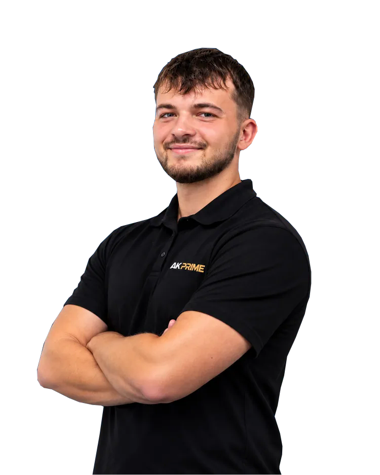
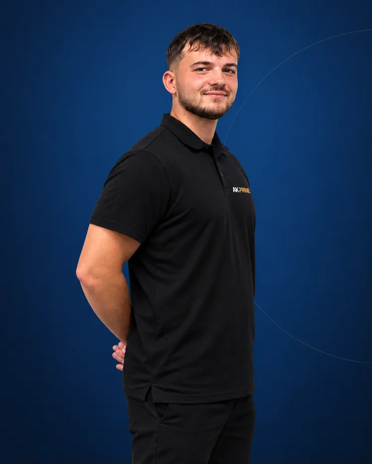

Commencer ou reprendre
Construire des habitudes d’entraînement progressives et adaptées à votre condition physique.
Remise en forme, musculation ou reprise de l'activité : progressez avec une programmation adaptée à votre niveau, vos disponibilités et votre matériel, suivie par un coach diplômé.
Master STAPS · Accompagnement individualisé · France entière

Votre quotidien doit être pris en compte : emploi du temps, niveau de départ, matériel à domicile ou en salle et capacité à maintenir des séances régulières.
Construire des habitudes d’entraînement progressives et adaptées à votre condition physique.
Développer force, condition physique générale et régularité avec une programmation individualisée.
Organiser des séances réalisables en tenant compte des contraintes professionnelles et personnelles.
Une démarche personnalisée, jamais une promesse de résultat identique pour tous.
Le programme se construit à partir de votre questionnaire initial. Les retours d’entraînement et les échanges permettent de le faire évoluer selon les difficultés signalées et votre niveau de suivi.
Objectifs, expérience, disponibilités, matériel et contraintes déclarées.
Séances de musculation ou de condition physique adaptées à votre situation.
Consignes de séance accessibles via Optitrainer pour garder un cadre régulier.
Ressenti, charge et bilans ; analyse technique vidéo selon les prestations.
Corrections selon les retours ou adaptation hebdomadaire renforcée selon l’offre.

AK PRIME est fondé par Alex Kieffer, diplômé d’un Master STAPS en entraînement et optimisation de la performance sportive. Son expérience de préparation physique multisport nourrit une méthode individualisée, applicable à la remise en forme comme à la musculation, sans chercher à imposer le même programme à tout le monde.
Découvrir le parcours du coachRetrouvez ici les prestations essentielles. En cliquant sur une formule, vous accédez directement à sa fiche complète ou à la souscription sécurisée sur le site officiel AK PRIME.
L’essentiel pour suivre un programme personnalisé et progresser avec des repères.
Un suivi plus approfondi avec des adaptations régulières selon votre état de forme.
Les tarifs, conditions d’engagement, détails des prestations et démonstrations sont confirmés sur les cartes officielles AK PRIME, pour éviter toute information obsolète.
L’intérêt d’un suivi à distance est de pouvoir retrouver facilement vos entraînements, vos consignes et votre évolution, sans multiplier les fichiers et les messages.
Un espace personnalisé pour retrouver votre accompagnement, selon les fonctionnalités prévues par la formule.
Les informations pratiques pour choisir un accompagnement adapté à votre situation.
Oui. Le questionnaire initial permet de tenir compte de votre niveau de départ, puis de construire des séances adaptées et progressives.
Non. Votre équipement réel est pris en compte lors du bilan : salle, haltères, élastiques ou matériel à domicile selon les objectifs définis.
Vous renseignez vos séances et vos retours. Optitrainer, les bilans et les échanges servent à suivre la charge et à ajuster la programmation selon votre formule.
Les deux offrent un programme individualisé. Renforcé prévoit un suivi de l’état de forme et des adaptations hebdomadaires plus fréquentes, ainsi que davantage de visios et d’analyses vidéo.
La programmation peut contribuer à améliorer la condition physique et la composition corporelle, sans résultat garanti. La formule Renforcé peut inclure un budget calorique et de macronutriments, sans prise en charge diététique médicale.
Le nombre de séances est fixé en fonction de vos disponibilités, de vos objectifs et de votre récupération plutôt qu’imposé d’emblée.
Découvrez les prestations de chaque formule et lancez votre parcours depuis le site officiel.